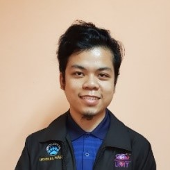

MOHD IKHMAL HAFIQ BIN ZUBIR
Bachelor Degree of Science Computer (Software Engineering)
- Age : 22 years old
- Place of Birth: Hospital Sibu, Sarawak
- Race : Malay
- Gender : Male
- Address : A-17-21, Menara Alpha Condominium, Jalan 4A/27A
- Email : ikhmal.zubir@gmail.com
SKILLS
- Android Studio
- HTML5 Programming
- Java Programming
Traits
- Eager to learn
- Have an interest to further increase my knowledge pool and develop new skills in broader fields.
- Fast learner
- Able to absorb any new knowledge easily through proper practice and guidance.
- Easy to communicate
- Capable of communicating with others easily.
Achievements
- Certified Professional for Requirements Engineering (Foundation Level)
- Certified by Malaysian Software Testing Board (MSTB) and International Requirements Engineering Board (IREB)


- Vice President in Sekretariat Rakan Muda (SRM) Universiti Malaysia Terengganu (UMT)
- Acquired leadership skills and management skills through managing events and programs.